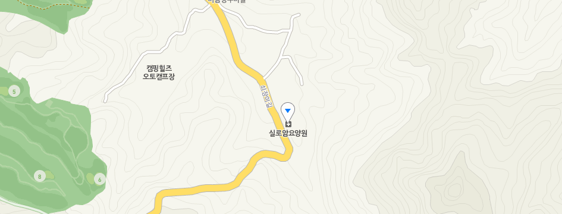

오시는길

주소 및 연락처
- 주소 : 경기도 양주시 광적면 쇠장이길 656 실로암 요양원
- 전화 : 031-876-2900
- 팩스 : 031-876-2990
대중교통
- 양주역 : 1호선 양주역 하차 – 51번 버스 탑승 – 기우리 하차 – 도보 10분
- 통일로IC : 서울외각순환고속도로 통일로IC – 고양동 3거리교 좌회전 – 77수퍼 우회전 – 영장주유소 좌회전 – 실로암요양원
- 송추IC : 서울외각순환고속도로 송추IC – 플러스마트 좌회전 – 기산저수지 좌회전 – 영장주유소 우회전 – 실로암요양원
- 호원IC : 서울외각순환고속도로 호원IC – 양주시청사거리 좌회전 – 가납사거리 좌회전 – 해유령전첩지 – 기우리 좌회전 - 실로암요양원